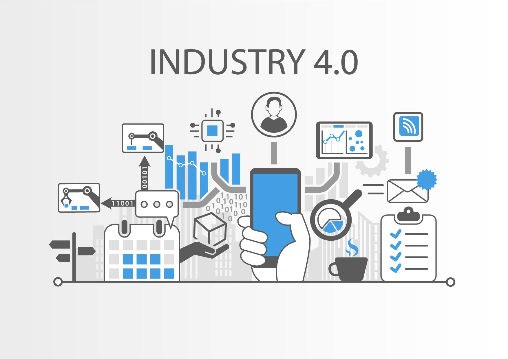

4차 산업혁명이란?
인공 지능, 사물 인터넷, 빅데이터 등 정보기술의 발달과 통신 기술의 발달로 초연결, 초지능, 초융합의 특성이 사회 전반에 혁신적인 변화가 나타나는 차세대 산업혁명을 말한다.
기존에는 사람과 기계가 할 수 있는 부분이 나눠져 있지만, 인공지능의 기술의 발달로 기계와 사람의 할 일에 대한 간극이 매우 좁아졌다.
대부분의 일들은 기계학습(Machine Learning)을 통해 기계가 처리하도록 할 수 있다. 여기에서 주목해야할 점은 학교교육에도 4차 산업혁명의 영향을 받게 되어 크게 영향을 받을 것이다.
특히 학교 현장에서는 교수자의 역할이 크게 바뀔 것이다. 과거에서 부터 20세기 까지교수자는 지식과 정보의 전달을 하는 정보 전달자의 역할을 수행하게 되었지만,
전문적인 지식들은 초연결이 되어있는 사회에서 쉽게 습득할 수 있다. 따라서 4차 산업 혁명시대에서 가장 중요한 교수자의 역할은 '새로운 것을 학습할 수 있도록 하는 능력'을 가르쳐야 한다.

4차 산업혁명
출처 : https://restart-project.eu/industry-4-0-impact-education/
출처 : https://restart-project.eu/industry-4-0-impact-education/